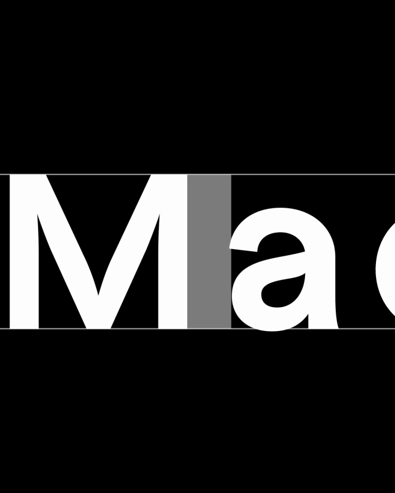

Modyfi / V360
排字动效 · 3.5 秒
用字的尺度和对齐方式完成整段动效：先看到字形局部，再拉回完整短句，最后拆成一列可移动的动作词。
构图与编排 可播放 · 可替换内容
整体编排规则示例
查看 HTML 源码
<!doctype html><html lang="zh-CN"><meta charset="utf-8"><meta name="viewport" content="width=device-width,initial-scale=1"><title>排字动效 · 3.5 秒 · sequence</title><style>html,body{margin:0;width:100%;height:100%;overflow:hidden;background:#000000}canvas{display:block;width:100%;height:100%;object-fit:contain}</style><body data-mode="sequence"><canvas width="1000" height="600"></canvas><script src="data.js"></script><script src="common.js"></script><script src="scene.js"></script><script src="bridge.js"></script></body></html>画面元素大字局部水平细线三行标题动词列表
MOTION LANGUAGE
动作与构图
局部动作 · 构图规则
01
文字由近到远，行线保持水平
文字由近到远，行线保持水平规则示例
查看 HTML 源码
<!doctype html><html lang="zh-CN"><meta charset="utf-8"><meta name="viewport" content="width=device-width,initial-scale=1"><title>排字动效 · 3.5 秒 · sequence</title><style>html,body{margin:0;width:100%;height:100%;overflow:hidden;background:#000000}canvas{display:block;width:100%;height:100%;object-fit:contain}</style><body data-mode="clip" data-start="0" data-end="2.2"><canvas width="1000" height="600"></canvas><script src="data.js"></script><script src="common.js"></script><script src="scene.js"></script><script src="bridge.js"></script></body></html>开头放大 Made 的局部，缩小后分为 Made / to / move 三行。细横线标明行高，短词在行内左右错开，行距紧但不重叠。
02
动词列表保持六行容量
结尾以 Design、Generate、Collaborate、Animate、Explore、Remix 六行替换大标题，各行横向滑到不同对齐点。黑底白字，次要词允许灰色；新文案应保持短词和近似字长。
SEQUENCE
段落与节奏
点击段落，定位到上方编排示意。

画面参考 · 离散静帧
KEEP THE RELATIONSHIPS
制作其他主题
- 替换三行主张和最多六个动作词；按字长重新计算行宽。
制作约束
大字局部 / 水平细线 / 三行标题 / 动词列表
- 开头放大 Made 的局部，缩小后分为 Made / to / move 三行。细横线标明行高，短词在行内左右错开，行距紧但不重叠。
- 结尾以 Design、Generate、Collaborate、Animate、Explore、Remix 六行替换大标题，各行横向滑到不同对齐点。黑底白字，次要词允许灰色；新文案应保持短词和近似字长。